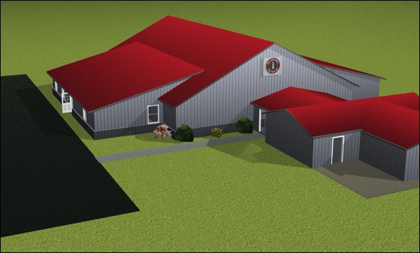

October 2016
Every court visit before had been a gut-wrenching battle of who could reveal the worst about the other. Caught in the middle, she had been through it too many times as a child. This one was going to be different though. We had cried and prayed with her, encouraged her to embrace the promise from Philippians in the bible, "Don’t fret or worry. Instead of worrying, pray. Let petitions and praises shape your worries into prayers, letting God know your concerns. Before you know it, a sense of God’s wholeness, everything coming together for good, will come and settle you down. It’s wonderful what happens when Christ displaces worry at the center of your life.” Many were praying on her behalf the morning of the final testimonies. Later that same day, before our weekly Lighthouse gathering, she sat in our home, beaming, laughing, like it had been one of her best days. When I asked her how court had gone, specifically about how she felt when she was testifying, her answer verified the light of her spirit that night, “It was oddly peaceful.” I startled her because I impulsively jumped and shouted, “Yes, Thank you Lord!” The Lord had shown up for her, just as he promised to.
Friends, I wish I could tell you all of the stories so you could understand the need we are facing. The turmoil in the lives of children coming to the Lighthouse is real and heartbreaking. I am grateful to say that many of them are finding that the words of the bible are more than just words, they are truth you can trust. The promises of God are solid enough to lean all your weight on them. However, because we are missionaries right here in our own community, the stories need to be protected, guarded, as fragile pieces of the lives we have been called to rescue.
The sense of urgency we have for the next phase of this mission we are on to bring hope to our community is greater than ever before. The chaos we see in these families is just a reflection of what we see in our country right now. We are in the midst of a culture of hatred, a culture of godlessness, now being exposed through the political process in ways that are just shocking. Our children are seeing and hearing of so much sin without grief and sorrow. The evil and confusion is bringing fear to people hearts and driving many to lock all the doors and watch endless episodes of anything just to be distracted from the truth, to escape from the reality. We offer hope to this generation by sharing the hope we have in Jesus Christ, the peace and joy he offers us here in this cursed world and the eternal life he offers us by the price that he paid to save us from our sin.
Since I last wrote in May, much has happened regarding our building project. There were discouraging setbacks, times this summer where I was tempted to believe that it was foolish to think that something like this could happen here in Bunker Hill. Thankfully, the Lord showed up for us too. I am excited to share with you that on September 19th, the state approved our building plans for The Lighthouse of Bunker Hill! Here is a model of what it will look like when it is finished.
We are deeply grateful for those of you who are able to support us financially. The season we are in right now as we prepare for construction is one of significant need. The design changes that had to be made this summer to meet the state requirements increased the cost of the building shell by about 20%. We are confident that as you pray and give, God will show us favor through your sacrifice and generosity. For more information about our vision for this outreach, you can read our past newsletters on our website at www.LHBH.org. You can also contact me directly at chris@LHBH.org and 765-271-6687. I would love to come share our story with you personally or any group you are involved in, including your churches. If you would like to send a gift, you can mail it to The Lighthouse, PO Box 336, Bunker Hill, IN 46914. All gifts are fully tax-deductible.
Sincerely,

Chris Edgington, Director